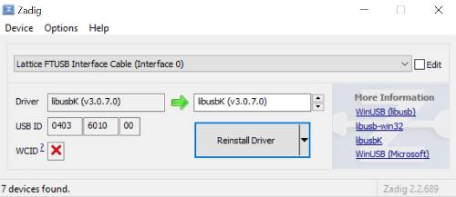
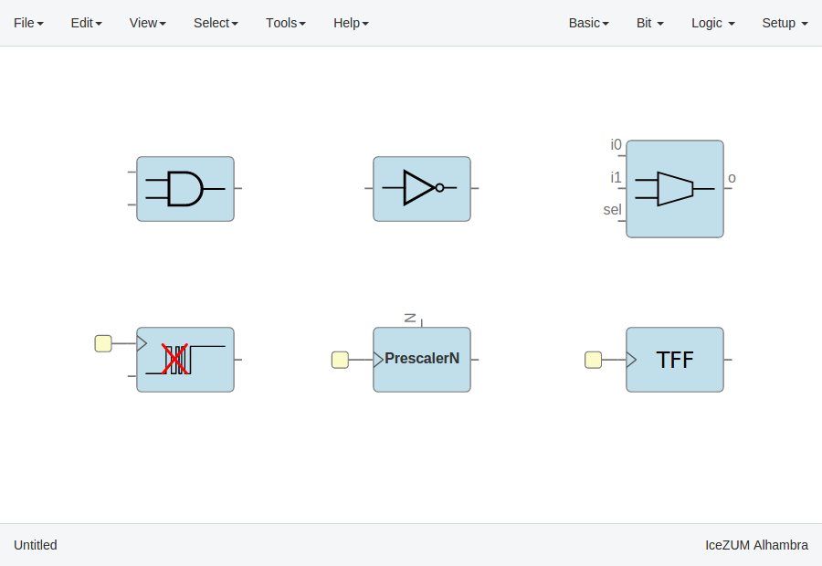
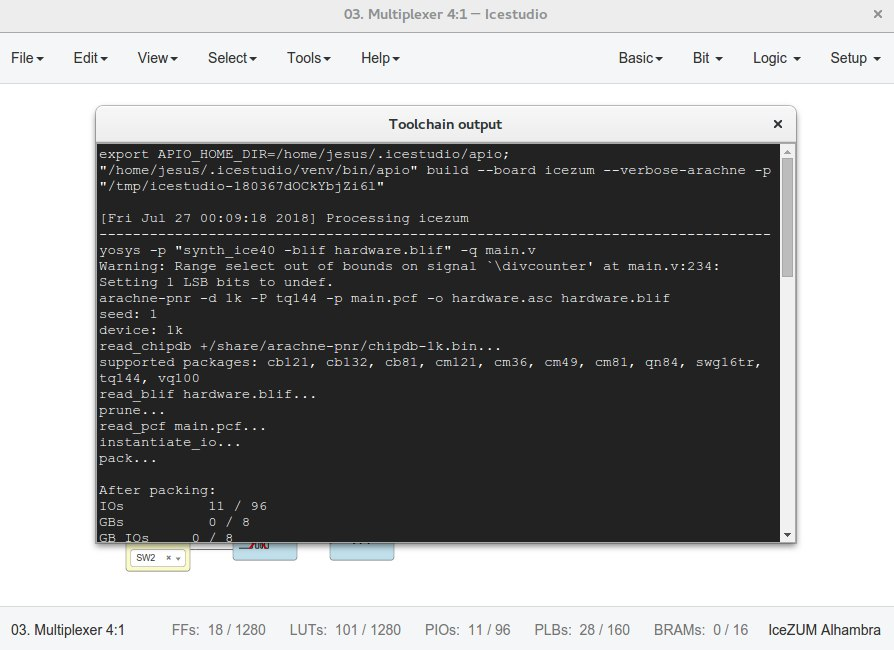

How to...¶
Take a snapshot¶
Taking a png snapshot of the application is as easy as press Ctrl+P. A save dialog appears to set the name and the path of the captured image.
Install the toolchain¶
Install Python ``>=3.6``
Launch the toolchain installation process
Note
When the toolchain is installed, the menu option changes to Edit > Preferences > Manage toolchain > Update*. Also, the toolchain can be restored to default in Edit > Preferences > Manage toolchain > Reset default.
Update the toolchain¶
Connect to the Internet
Launch the toolchain updating process
Go to Edit > Preferences > Manage toolchain > Update. Be patient for the toolchain update.
Install the drivers¶
Install the toolchain (required for Windows)
Enable the FTDI drivers
Go to Edit > Preferences > Drivers > Enable. Each OS has a different process. This configuration requires administration privileges.
Note
On Windows, an external application (Zadig) is used. It replaces the existing FTDI driver of the Interface 0 with libusbK.
On macOS, this operation requires internet connection to allow Homebrew to install libffi and libftdi packages.
Hint
For reverting the configuration, go to Edit > Preferences > Drivers > Disable.
Create a project¶
Create a new project
Go to Edit > New. A new window will be opened.

Add blocks

There are different types of blocks:
Input/Output blocks
Click on Basic > Input or Basic > Output, write the block's name and press OK or Enter.
Also, it can be configured as buses using the
[x:y]notation (xis the most significant bit).
If these blocks are used to build generic blocks, they should be configured as virtual (green). Then, the FPGA pin selector won't be shown.
Constant blocks
Click on Basic > Constant, write the block's name and press OK or Enter.
These blocks can be configures as local. Then, this parameter won't be exported.

Memory blocks
Click on Basic > Memory, write the block's name and press OK or Enter.
These blocks can be configures as local. Then, this parameter won't be exported. Also you can update the address format of the memory to be binary, decimal or hexadecimal.
Code blocks
Click on Basic > Code, add the code ports. Port names are separated by a comma. E.g.:
a, b.This block contains a text editor to write your module in verilog code. Module header and footer are not required.

Info blocks
Click on Basic > Info.
This block contains a text editor to add comments about the project in Markdown or HTML.

It can be rendered simply by double-clicking the block.
Bit blocks
Click on Bit > 0 or Bit > 1.
These blocks are low and high logic drivers.

Logic blocks
Go to the Logic menu and select a block. This menu contains Gates, Combinational blocks and Sequential blocks.
Setup blocks
Click on Setup > Pull up or Setup > Tri-state.
The Pull up block must be connected to input ports in order to configure a pull up in the FPGA.

In this example we are going to implement an AND logic gate with its input/output pins connected to the FPGA I/O.

Connect the blocks


Upload a bitstream¶
Open a project
Go to Edit > Open... and select an .ice file.
Verify the project
Go to Tools > Verify.
This option checks the generated verilog code using
apio verify.Build the project
Go to Tools > Build.
This option generates a bitstream using
apio build.Upload the project
Connect your FPGA board and press Tools > Upload. This option uses
apio upload.
After executing Tools > Verify, Tools > Build or Tools > Upload you can see the executed command and the output in a new windows opened from View > Command output.
Create a block¶
Open a project
Go to Edit > Open project and select an .ice file. It is recommended to set all the I/O ports non-FPGA ports (green) to create a block.
Verify the project
Go to Tools > Verify.

{kind=link}
{kind=link}
{kind=link}
{kind=link}
{kind=link}
{kind=link}
{kind=link}
{kind=link}
{kind=link}
{kind=link}
{kind=link}
{kind=link}
{kind=link}
{kind=link}
{kind=link}
Add a project as block¶
{kind=link}
{kind=link}
{kind=link}
Create a collection package¶
Create one or more collections
You can use the icm cli tool to create and update a collection.
Collection/ ├── blocks │ ├── category1 │ │ ├── block1.ice │ │ └── subcategory1 │ │ ├── block11.ice │ │ └── block12.ice │ └── category2 │ └── block2.ice ├── examples │ ├── example1.ice │ ├── example2.ice │ └── example3.ice ├── locale │ ├── en │ │ └── en.po │ ├── es_ES │ │ └── es_ES.po │ └── translation.js ├── LICENSE ├── package.json └── README.md
ZIP all your collections
Create a ZIP file with all your created collections at the main level.
Collections.zip | ├── Collections 1 │ └── ... └── Collections 2 └── ...
Note
The file package.json must exists, and also the blocks directory and/or the examples directory. The locale directory is optional. More information in the Default collection.
Include a list file¶
If your code block contains a list file(s), for example:
$readmemh("rom.list", rom);
Save the ice project
Copy the list file(s) to the project directory
Build and upload the project
Also you can include explicitly a list file in the header of a code block:
// @include rom.list
Include a verilog (header) file¶
If your code block includes a verilog (header) file(s), for example:
// @include lib.vh
// @include math.v
`include "lib.vh"
Save the ice project
Copy the verilog (header) file(s) to the project's directory
Build and upload the project
Configure a remote host¶
I you want to use a RPi (or another computer), e.g. pi@192.168.0.22, first configure the host:
Copy your SSH public key into the server
$ ssh-keygen $ ssh-copy-id -i .ssh/id_rsa.pub pi@192.168.0.22
Install apio on the server
$ ssh pi@192.168.0.22 $ sudo pip install -U apio $ apio install --all $ apio drivers --enable # For FTDI devices
Enter the host name in Icestudio, Edit > Remote hostname
Now, Verify, Build and Upload tools will run on the selected host